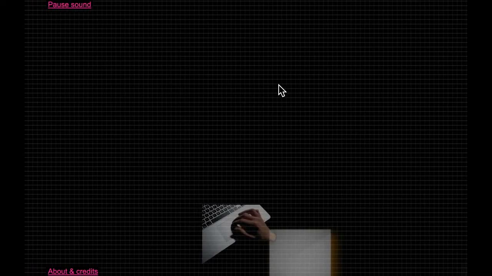
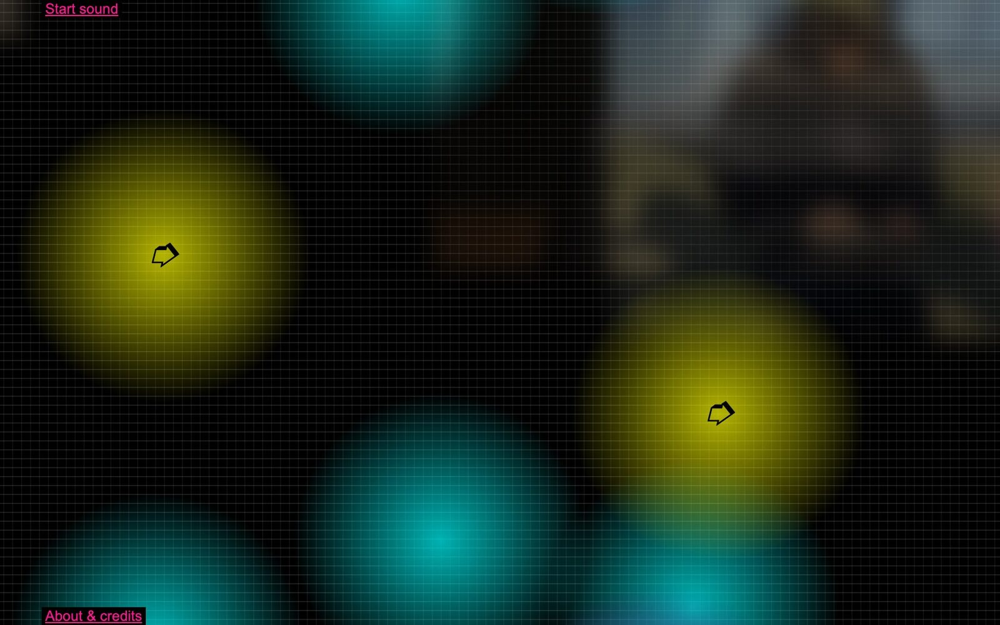
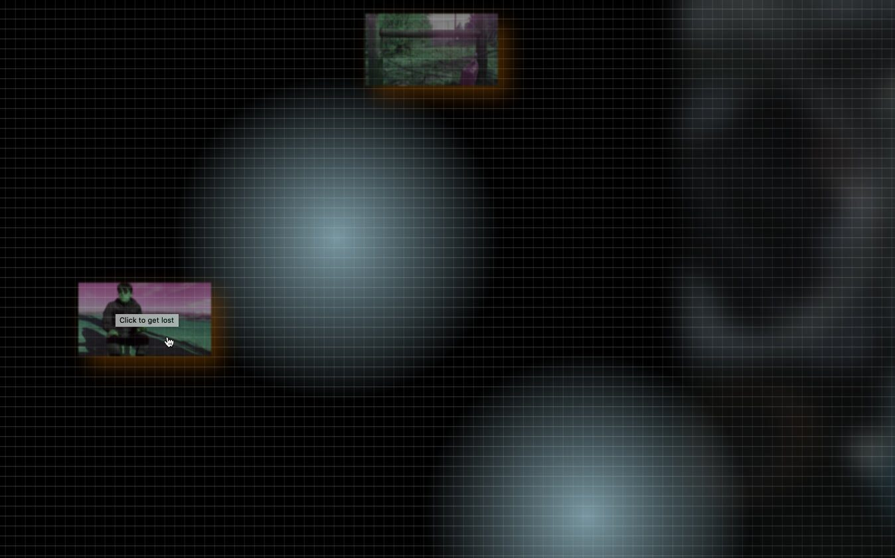
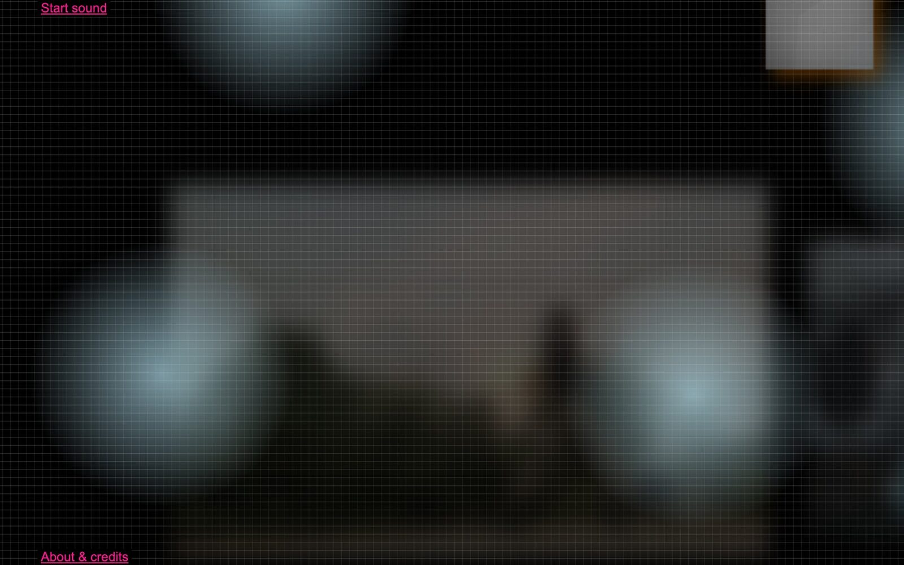
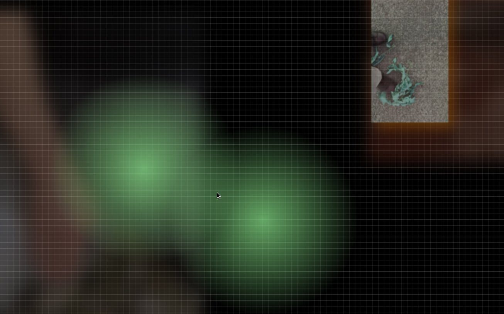

\#otherbeats: Performing a Participatory Archive of Social Rhythm
PROJECT DESCRIPTION
#otherbeats is a sound piece that lives on the web, or a website that makes sound. The piece is made from an archive of “social” rhythm that I collected from over 50 participants around the globe during the pandemic. Each participant interpreted the prompts that I circulated in their own way while mostly being in isolation and with little to no access to instruments or professional recording technology. The prompts asked them, in several ways, to explore differences between musical concepts such as “tempo,” “beat” “rhythm” or “alternative metronome” in tiny 3-minute performances ideally in the outdoors, and so the collected archive showcases a wide range of approaches to humans keeping time. The collected audio exhibits versions of human-made regularity and manifold ways of deviation thereof. #otherbeats organizes all these audio recordings on a website, with the use of HTML and the Web Audio API, and equips them with a visual appearance that acts at once as a purposely under-explained and nebulous user interface and an immersive experience with the aim to create a sense of getting lost within the sonic and visual ephemera. The rhythm recordings, on the website, are spread and arranged visually in space, and with the Web Audio API, an experience of distance, or proximity respectively, is produced. By scrolling, the user approaches ever new audio files that gradually appear on the virtual “horizon” and become louder, clearer, and dryer. On the other hand, those sounds left behind disappear in the distance. The lowpass filter’s cutoff frequency is lowered, the amount of convolution reverb increased, and the gain reduced. If they click on one of the few clickable items, a JavaScript random algorithm takes them to a new location within the website rather far away and results in a swift change of the sonic carpet. All audio processing is computed directly on the user’s browser with the user’s left-right and top-down scrolling, and clicking, as the sole input variables. The user navigates their own way through the archive of rhythm recordings, all of which play constantly and simultaneously in loop but never quite sync up with one another – given the precarious nature of their making. They find themselves left with a quite blurry visual and sonic space that is ever changing and yet constantly evades being grabbed and pinned down.
PROGRAM NOTES
For #otherbeats, Marcel Zaes prompted participants all over the world during the pandemic to send him self-made recordings of rhythms, beats and “alternative metronomes.” The collected archive of “social” rhythm along with visual ephemera by the participants and with the addition of few synthetic sounds and images constitute the material from which the piece is made. These materials, in #otherbeats, exist in a hyper mediated form. They are organized, (re-)mixed, made navigable for the user and are filtered in real-time directly on the web, in the user’s browser, with the use of HTML and the Web Audio API. With #otherbeats, Marcel Zaes balances the ethics of archival-participatory work with the presence of an artistic-aesthetic agenda. He creates a space in which multiple approaches to rhythm-making coexist. The rhythms collected are mostly human made, yet they often hold ambiguous positions between regular and deviant; between time grid and rhythmic shape; and also, between rhythmic foreground and surrounding background ambience. For NIME 2021, Zaes decided to present #otherbeats in the form of a concert performance in which he takes the audience on a guided tour through the piece. Feel free to explore the piece on your own at https://otherbeats.net.
PERFORMANCE REQUIREMENTS
This piece is made in, and made for, the pandemic. It functions fully online, as a standalone website that is compatible, to date, with new versions of Chrome and Firefox, but by no means with Safari. The artist will present the web-based sound piece in a concert performance where he takes the audience on a tour through the piece and will subsequently invite the audience to check the piece out on their own at https://otherbeats.net. Potential durations for the concert are quite flexible, they range from a minimum duration of 10 minutes to ideally 20-25 minutes up to a 45-minute “extended” version.
MEDIA
The accompanying media clip is an excerpt from a performance that I did recently.

▶#otherbeats, Video example: Performance excerpt


#otherbeats, photo: screenshot, web browser with Web Audio API


#otherbeats, photo: screenshot, web browser with Web Audio API


#otherbeats, photo: screenshot, web browser with Web Audio API


#otherbeats, photo: screenshot, web browser with Web Audio API
Acknowledgements
Thanks to all #otherbeats participants who have volunteered and contributed audio recordings, photo and video, all of which constitute the material from which #otherbeats is made. Their names are listed at https://otherbeats.net/about.